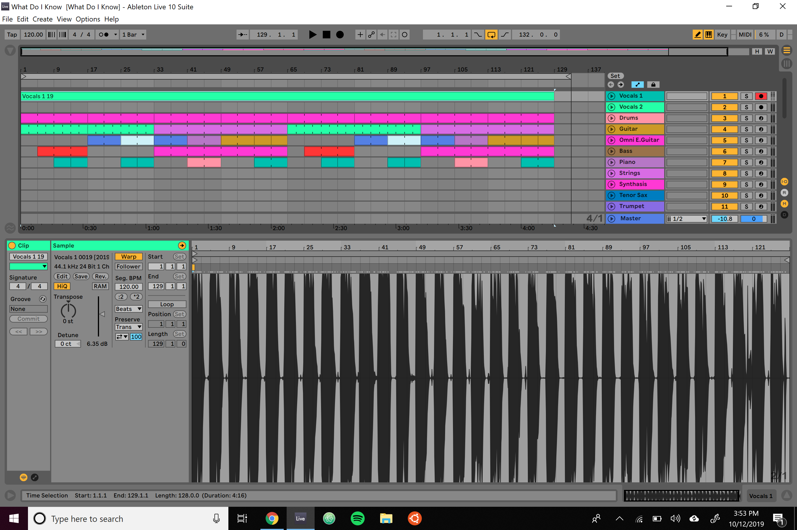
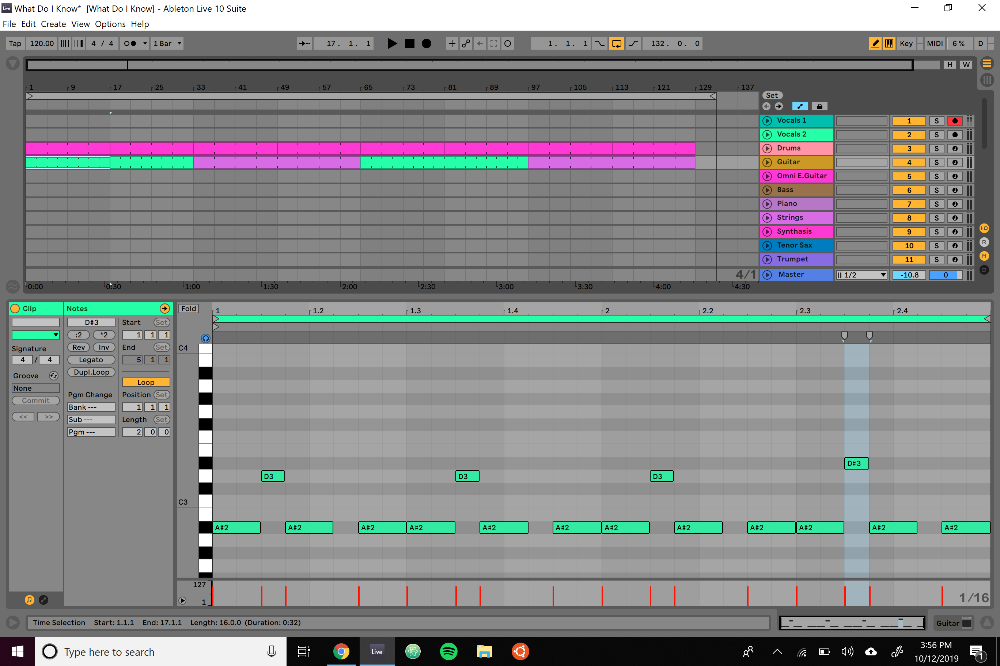
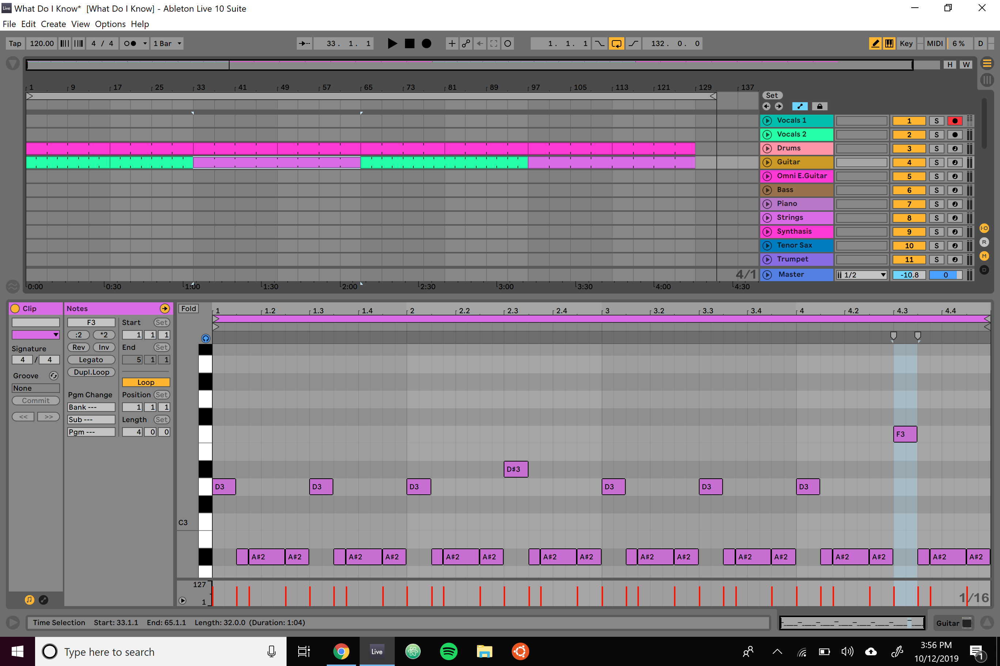
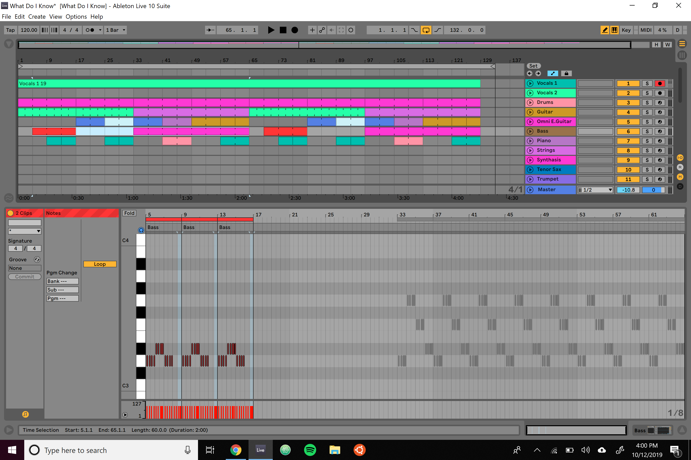
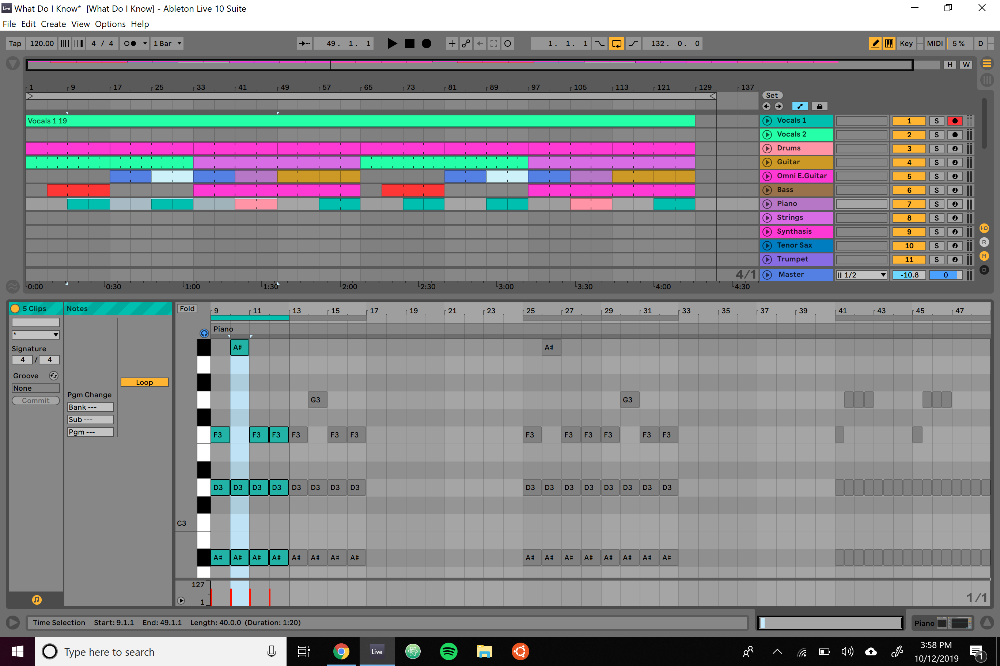
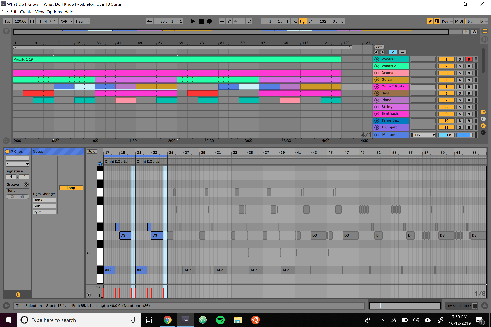

10/12/2019 4:45 PM
There are many different ways I write a song because I write a wide variety of music. For this post, I will mostly be focusing on how I write a pop song, which is heavily influenced by my rock, classical and pop music background. I wanted to write a short post to show everyone how I write a song, to help you get signed to record labels like mine, AWAL.
I use Ableton Live and Native Instruments along with a few software synthesizers I will detail in a later post to make music. I run this software on a Surface Pro tablet with an Intel i7 Processor, and I use a Rode NT2A microphone with a Focusrite Scarlett audio interface. The cost of this software all together and the hardware was about $5,000, which isn't bad considering many artists pay much more than this just to buy their instruments. Virtual instruments can be a good option for singers if you are on a budget.
I start a track off by writing the lyrics, every time. Having lyrics to sing to helps me know what key I am playing in, the tempo, time signature, the rhythm and really helps me bring the song together as soon as I have the vocals ready. Here are a few of the lyrics to the song I am using in this example:
Know when I take your hand, I won’t miss your call
And let every moment last, no matter how small
Know when the clouds come down, I’ll stand in the rain
And if you fly away, I’ll be on that plane
Know at the end of our days, we won’t die alone
Because in this beautiful place, we’ve found a home
Know that you are ready, so take your aim
And when you say you love, I’ll say the same
When I sing on a track, I initally start by playing a few instruments in Ableton. For this example, I have started with guitar and electric guitar as pictured. Because I mostly make pop music, I like to keep the melodies reasonably simple in order to make them easily memorable and playable by the fans.
I then add a bassline which matches or sounds good with the chords I am playing.
I add chords, usually drafted in the software I wrote at OpenChords.org, once again keeping them simple and playable. This song is a little slower paced so I am mostly using whole notes on the chords.
I then create more complex melodies for the guitar, and sometimes use synthesizers as well. I will dive into more detail with the synthesizers I use and how I use them in the future, but I'm going to skip over them for now to keep this post short. Synthesizers are quite complex and might take some time to explain.
When I am finished adding the music, I listen to it all together once more to make sure it is good. I then re record vocals over the track in order to make sure the vocals are perfect before the track is in the mid stages of production. Usually at this point I move on to other projects to let my creativity keep flowing, and then come back to the project and make small changes improving the overall sound, and re record the vocals on my microphone. When I am recording tracks for the first time as demos, I like to record them on my laptop microphones as this is good enough for the beginning stages of production.
As you can see, the setup of this song is quite basic. Basic is what people like in pop music, too much complexity will lose people who aren't music majors. Bringing yourself to making simpler music will help you connect with fans who have musical taste but perhaps not as much background in writing or playing music. I hate to say we, as music makers, have to dumb it down for people, but simplifying your music can help you out a lot in the long run.
I hope you enjoyed this post. Let me know if there is anything I should add, anything I didn't clarify, or if I can improve on my track at all from what you can see above.
< Older Newer >